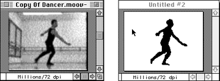
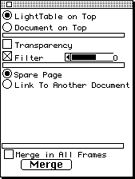
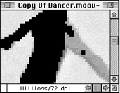

The light table allows you to trace over selections from an existing
document and save them in new document. In traditional animation
terminology, this is known as rotoscoping.
Below, you can see one frame of the original document (from a QuickTime
movie) and one frame from the new, created by tracing over the first
document.

Figure 1: A QuickTime movie frame (left) and the light table
with a trace.
About this section
This section steps you through using the light table to create a sketch
from a movie. The procedure has the following parts:
Loading the original animation.
Bringing up the light table and linking it to another document.
Drawing over the part you want to move to the other document on each
frame of the movie.
Saving the copy for later use, either as a selection or as a separate
animation.
How to create a new animation with the light table
To use the light table for creating an animation from a movie, follow
these steps:
Load the original animation and move to the first frame from which you
want to copy.
From the Anim menu, choose Light Table, then Show the Light Table from
the submenu.
3DO Animator brings up the Light Table dialog and the light table. By
default, the light table is on top of the document and is opaque.

Figure 2: Light Table dialog.
In the Light Table dialog, select the Transparency option to let the
document shine through.
The light table becomes transparent and the document becomes visible.
Keep in mind that if you now draw on top of the document, you are actually
drawing on the invisible light table.
In the Light Table dialog, select Link To Another Document.
3DO Animator brings up a document the size of the original. If you now
draw on the light table, which is on top of the original, the drawing is
stored in the new document.
If you are planning to draw in a color similar to the original-for
example, sketch out a black dancer using a black pen-consider making the
document appear lighter by using a filter. Move the Filter scroll bar to
the right to lighten up the view of the document.
Choose an appropriate brush and draw onto the first document. You may
find it necessary at times to enlarge the view of the document.

Figure 3: Enlarged view of a document.
Note that the linked document only updates when you select it.
When you have finished drawing on all the frames you need, you can
select the linked document and play the sketch animation you created.
Save the newly created document under a new name.
Don't forget to release the light table before you quit.